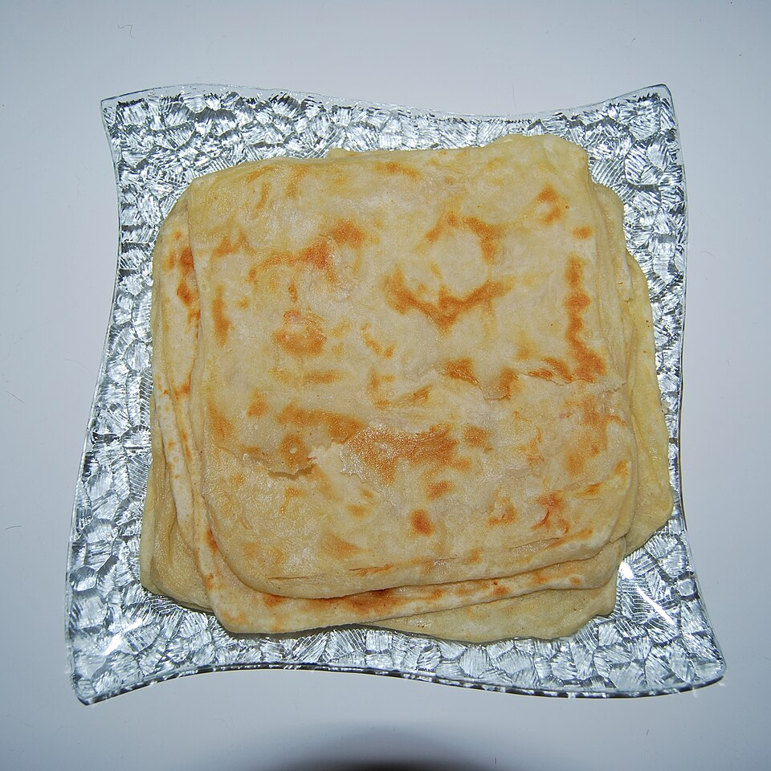
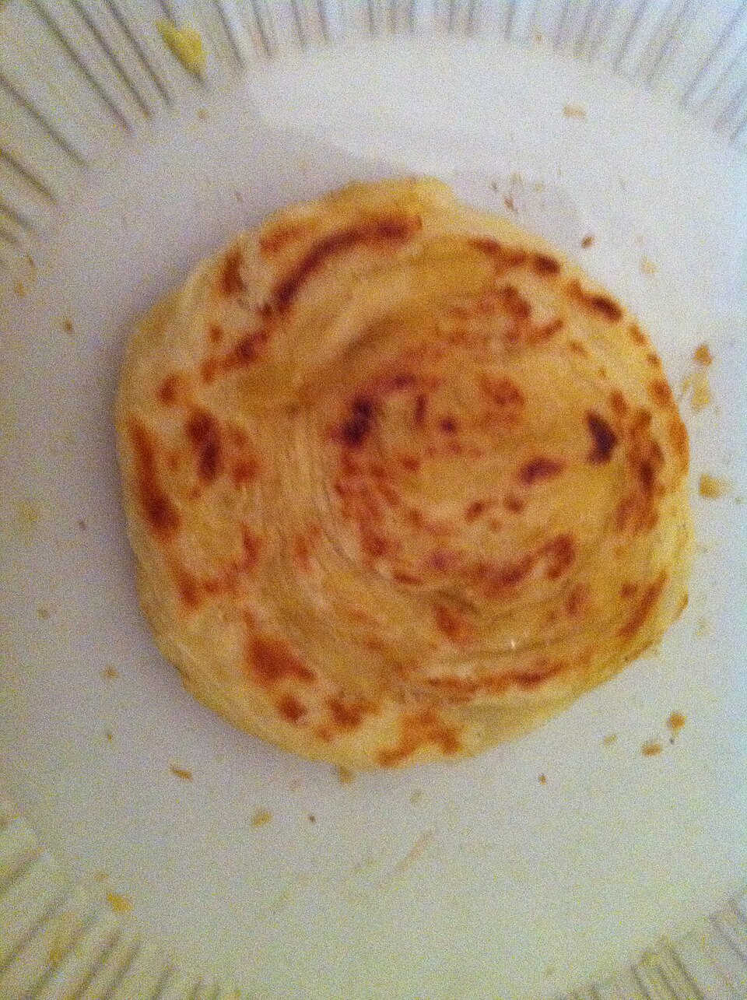
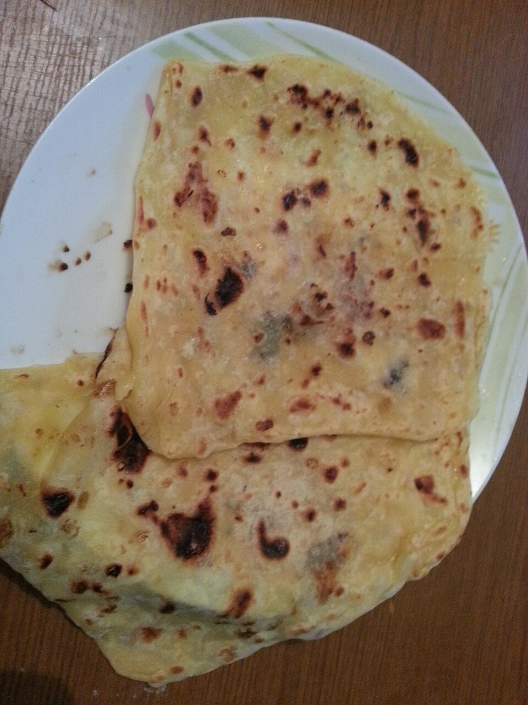
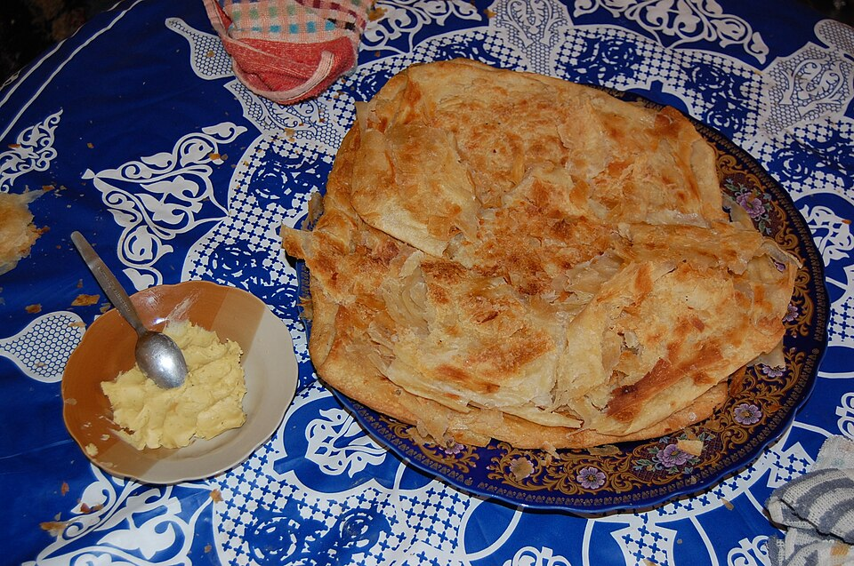
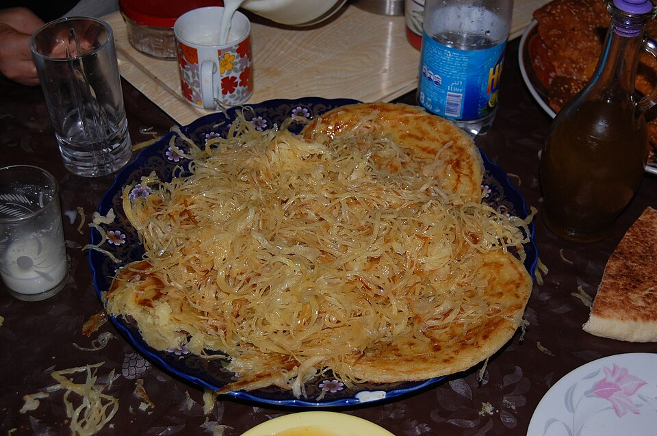
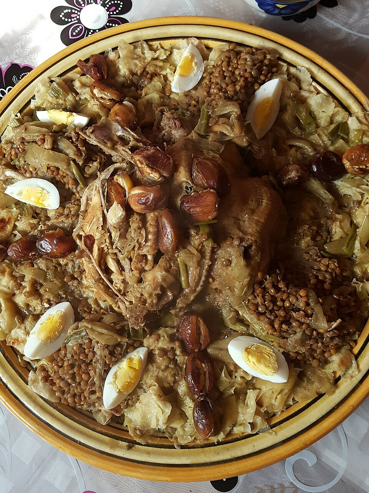
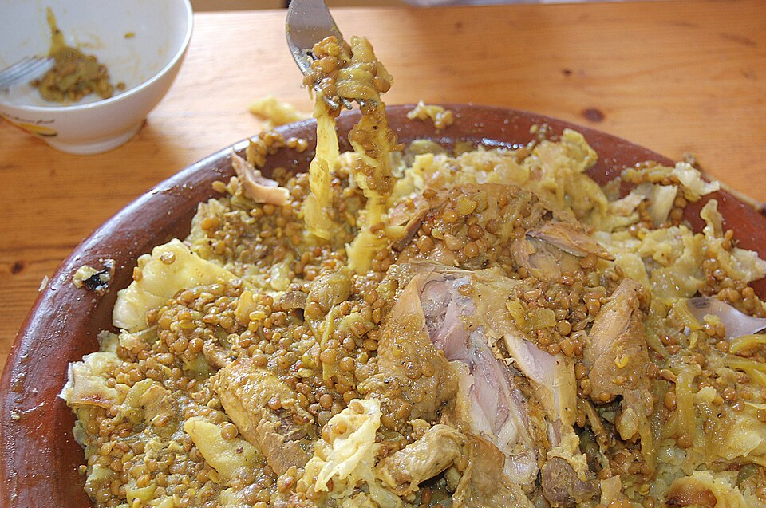
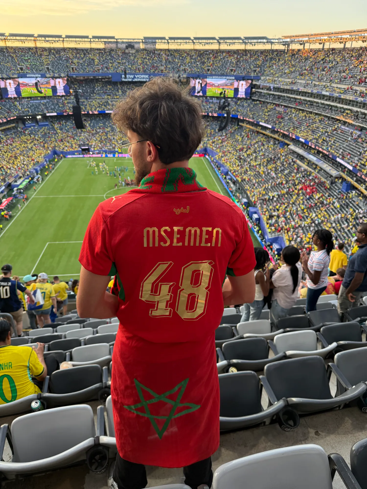

Les ingrédients
- 500 g farine
- 200 g semoule fine
- 1 c.à.c sel
- 1 c.à.c sucre
- ~350 ml eau tiède
- Pour le pliage : huile, beurre fondu, semoule fine.
La crêpe feuilletée qui se plie, se beurre, se farcit et se partage avec un verre de thé à la menthe.
Voir les déclinaisonsAu Maroc, le msemen se prépare à l'aube et se mange au goûter. Une pâte simple, farine, semoule, sel et eau, étirée jusqu'à devenir transparente, beurrée, puis pliée encore et encore. Le résultat : des dizaines de couches croustillantes dehors, fondantes dedans. On l'appelle aussi rghaif. Chaque famille a sa main, chaque ville a sa version.
Mélange farine, semoule, sel et sucre. Ajoute l'eau petit à petit et pétris 10 à 15 min, jusqu'à obtenir une pâte lisse, souple et élastique.
Forme des boules de la taille d'une mandarine. Badigeonne-les d'huile et laisse reposer 15 min sous un torchon : le gluten se détend.
Sur un plan de travail huilé, étire chaque boule du bout des doigts jusqu'à ce qu'elle soit presque transparente. C'est là que tout se joue.
Beurre fondu, pluie de semoule. Plie en trois dans un sens, puis en trois dans l'autre : un carré parfait. Repos 10 min, puis aplatis-le doucement.
Poêle bien chaude, à sec ou à peine huilée. 2 à 3 min par face, jusqu'à ces taches dorées qui font tout le charme.
Chaud. Avec du miel et du beurre fondu, ou de l'amlou, ou du jben. Et un thé à la menthe versé de haut. Bessaha.

Le carré feuilleté de référence. Croustillant, beurré, doré par plaques.
Nature
La même pâte, mais roulée en boudin puis enroulée en spirale. Plus épais, plus moelleux, il s'effeuille quand on le froisse.
Nature
Farci d'oignons fondants, persil, coriandre, paprika, cumin et une pointe de piment. Le goûter salé par excellence.
FarciGarni de khlii, la viande séchée et confite dans sa graisse. Intense, fumé, généreux. Une version de fête.
FarciViande hachée épicée, oignon et herbes, enfermée entre les couches. Un repas complet dans un carré.
Farci
Trempé dans un mélange chaud de miel et de beurre fondu. Le classique des après-midis de Ramadan.
Sucré
La pâte est étirée en fils très fins, enroulés en turban. Servie arrosée de miel et de beurre. Un travail d'orfèvre.
Sucré
Msemen ou trid effilochés, nappés d'un bouillon de poulet aux lentilles, fenugrec et ras el hanout. Le plat des grandes occasions.
Plat
Le cousin ultra-fin : des feuilles quasi transparentes, cuites sur une marmite retournée, servies sous un tajine de poulet.
PlatRoulé avec du fromage fondu, de l'omelette ou du thon : la version sandwich des charrettes de rue. Ça se mange en marchant.
FarciLe msemen ne reste pas à la maison. Floqué en lettres d'or sur le maillot des Lions de l'Atlas, il a fait le voyage jusqu'à New York / New Jersey pour la Coupe du Monde 2026. Écharpe au cou, drapeau à l'étoile verte : Dima Maghrib.
